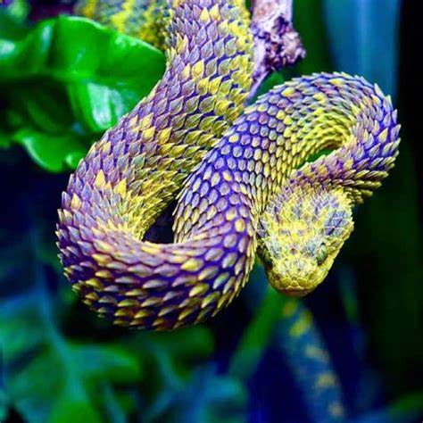
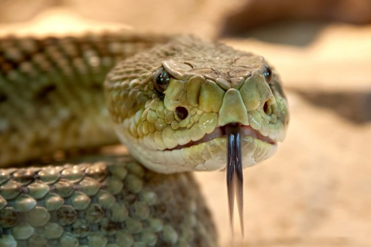
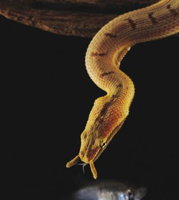
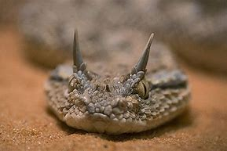

Les Artheris, aussi appelés les serpents "dragon" ont des couleurs exeptionnelles et ont certaines particularité comme des écailles qui sortent de leurs corps, non pas comme les autres serpents, où leurs écailles sont collés à leurs peaux.

Le boa de Cropan
Le boa de Cropan est le serpent le plus rare du monde. Il n’avait pas été observé vivant depuis sa découverte en 1953. En janvier dernier, au Brésil, un groupe d’agriculteurs a découvert à nouveau l’animal plus de 60 ans après sa première observation.

Le serpent à tentacules
Erpeton tentaculatum, le Serpent à tentacules, unique représentant du genre Erpeton, est une espèce de serpents de la famille des Homalopsidae. Ce serpent vit dans les marécages et au bord du littoral.

La vipère à cornes
Cerastes cerastes, la Vipère à cornes, est une espèce de serpents de la famille des Viperidae. C'est un serpent venimeux qui vit dans les déserts d'Afrique du Nord et du Moyen-Orient. Elle chasse à l'affût, généralement cachée sous le sable.

La vipère rhinocéros
Bitis nasicornis, la Vipère rhinocéros, est une espèce de serpents de la famille des Viperidae.On la trouve dans la forêt humide de l'Ouest et du centre de l'Afrique. C'est une grosse vipère venimeuse, pouvant dépasser le mètre, caractérisée par sa robe colorée et surtout un appendice nasal en forme de cornes. On ne connaît pas de sous-espèces.